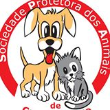
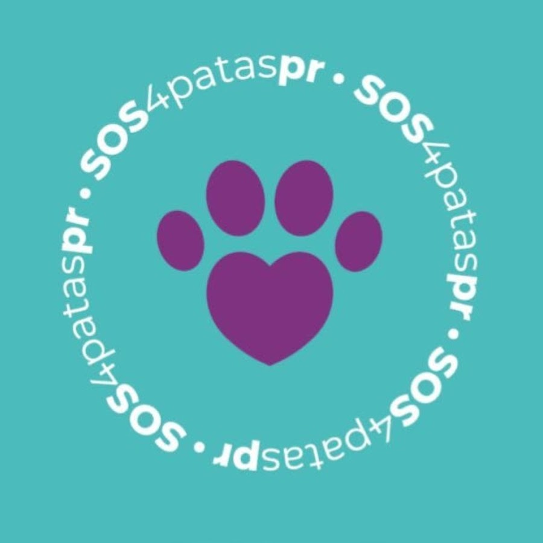

SOCIEDADE PROTETORA DOS ANIMAIS DE CAMPO LARGO
A Sociedade Protetora é uma entidade sem fins lucrativos, mantida com o trabalho e as contribuições de inúmeros voluntários.
a nossa missão é:
SOS 4 patas pr
O projeto SOS 4 Patas nasceu há 9 (nove) anos, na Cidade de Campo Largo/PR, e foi idealizado pela Mariane Mazzon, a qual reuniu pessoas que sempre foram apaixonadas pela causa animal e começaram a atuar em resgates de animais que se encontravam em estado de vulnerabilidade, cuidando e mantendo-os em condições saudáveis e direcionando para adoções.
Recolhemos animais abandonados que estejam em extremo perigo, debilitados, com alguma doença ou ferimento grave, ou mesmo acidentados, encaminhado os mesmo para uma avaliação veterinária.